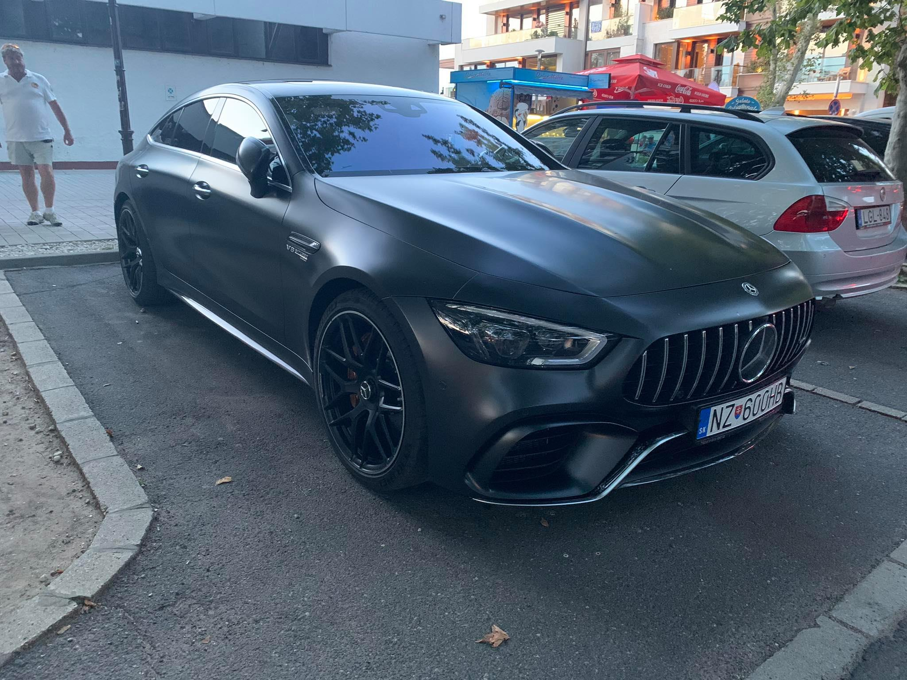
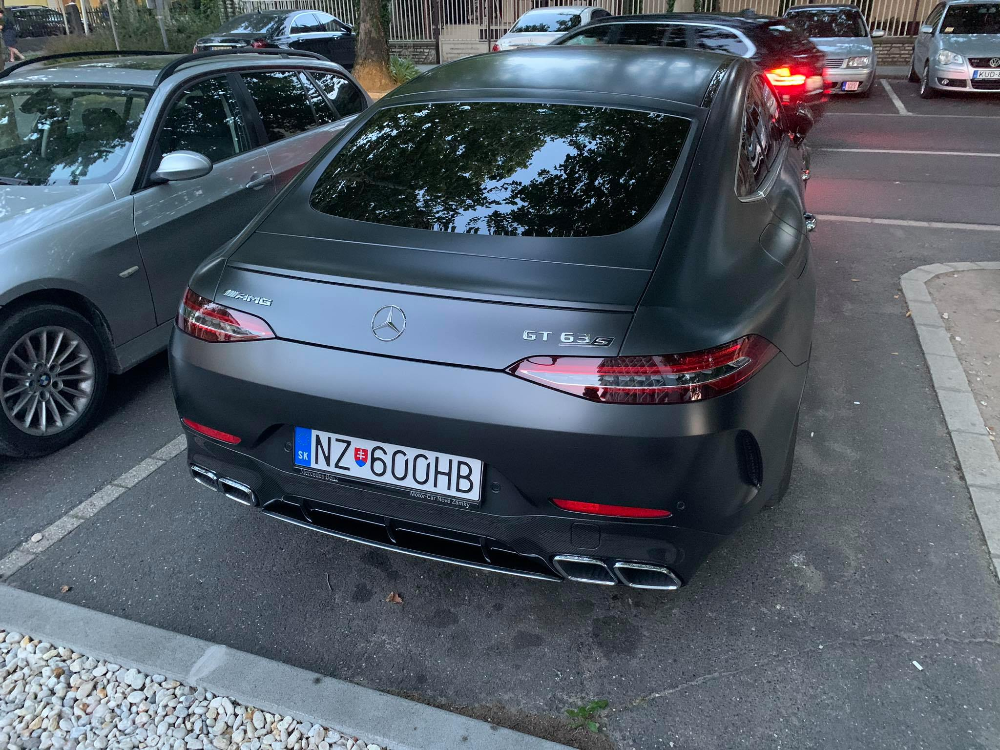
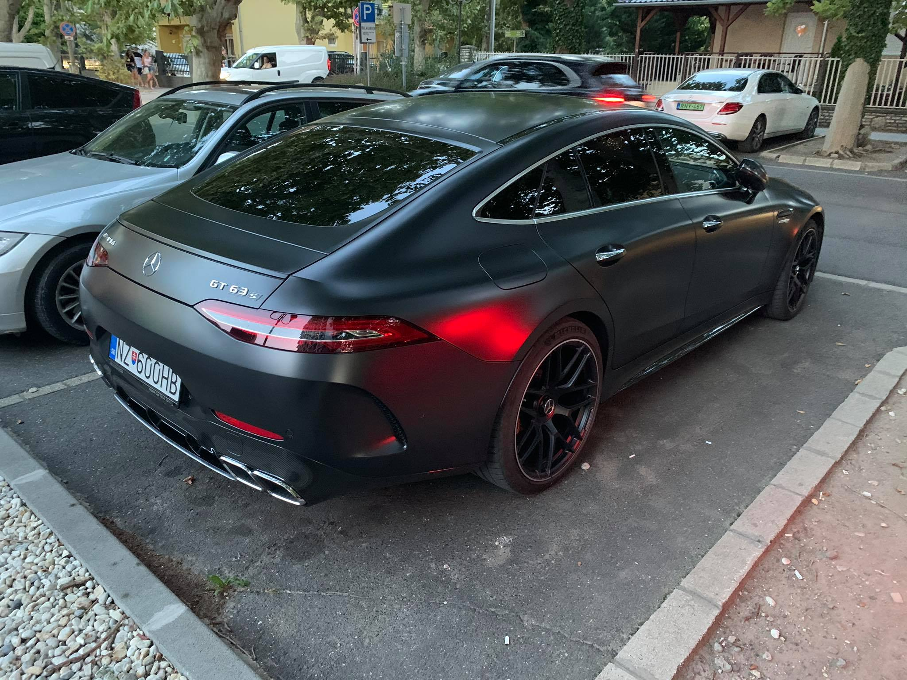
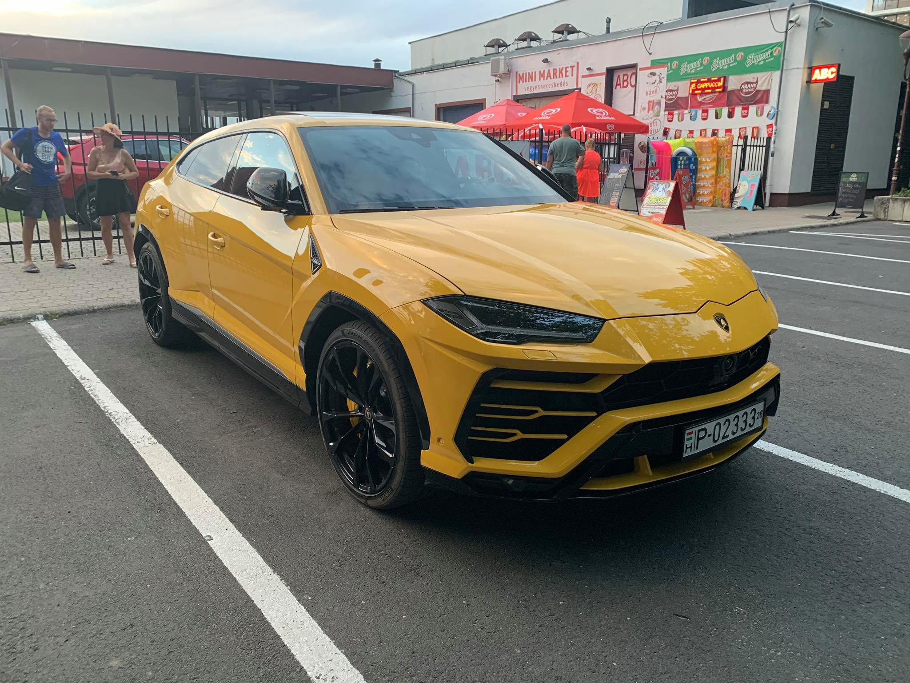
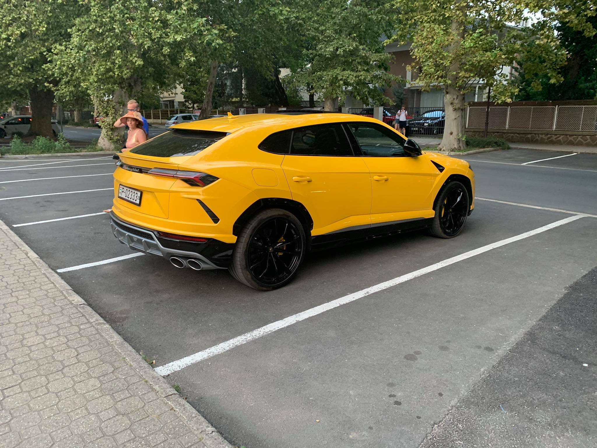
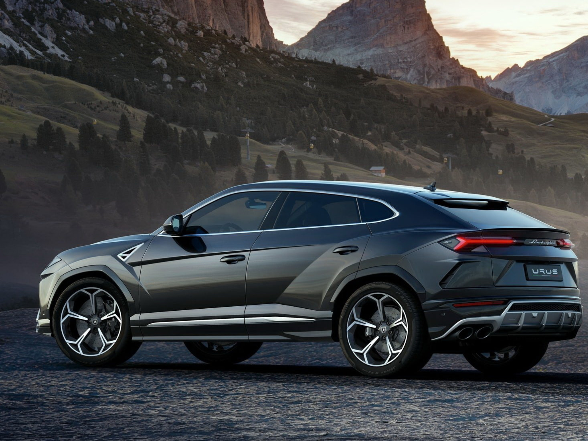

A Mercedes-AMG GT 4 ajtós Coupéval öt modellváltozat – AMG GT 43 és 43 4MATIC+, AMG GT 53 4MATIC+, AMG GT 63 4MATIC+ és AMG GT 63 S 4MATIC+ – áll rendelkezésére, ráadásul ezekhez számos egyedi kialakítási lehetőség közül választhat: háromféle farkialakítás, exkluzív külső és belső felszereltségcsomagok, valamint bő választék különféle fényezésekből, keréktárcsákból és fékekből.

A GT 63 S 4Matic+ 4 door neve eleve kér egy megoldókulcsot, hosszan kifejtve ez a Mercedes négyajtós, de kupévonalú túraautója, egy 640 lóerős, 900 newtonmétert tudó V8-as biturbóval, meg leoldható első kihajtású összkerékhajtással.

Ez csak egyszerűen, dráma nélkül, semmiféle ellentmondást nem tűrve pokoli gyors. Nem érzem, hogy élek, de a vásárlóközönség az életet nem is a kormány mögött, hanem egy instamodell oldalán, vagy két csík koksz felett a vipben keresi. Érdekes mellékzönge, hogy a 63 S-ből átülhettünk a mezei GT 63-ba, az tényleg sokkal kevésbé tűnt alkalmasnak.
Lamborghini Urus

Turbós V8, négy ajtó, 600 liternél is öblösebb csomagtartó - vajon az Urus is van olyan vad, mint lapos, középmotoros testvérei? A vallelungai bemutatón alaposan utánajártunk: van szarva a bikának!

- Kategória: extrém sportos luxus SUV
- Költségek: kb. 65 millió forinttól indul az ára
- Forgalmazás kezdete: 2018. júniusban vették át az első autókat az ügyfelek
- Versenytársak: Mercedes-AMG GLE 63 S, Porsche Cayenne Turbo, BMW X6 M

- Listaár: 204 000 euró (kb. 64 500 000 Ft)
- Motor: V8-as, turbófeltöltős, benzines, 3996 cm3, 478 kW (650 LE) 6000/percnél, 850 Nm 2250/percnél
Saját tömeg: 2197 kg
Tömeg/teljesítmény: 3,4 kg/LE
- Erőátvitel: Összkerékhajtás, nyolcfokozatú automatikus váltó
Futómű: Független kerékfelfüggesztés elöl és hátul dupla kereszt lengőkarokkal, légrugókkal, lengéscsillapítókkal, stabilizátorokkal, hűtött karbon-kerámia féktárcsákkal.
- Gumi: elöl 285/45 R 21, hátul 315/40 R21
Hossz. x szél. x mag.: 5112x2016x1638 mm
- Menetteljesítmények: 0-100 km/h 3,6 s, 305 km/h
- Átlagfogyasztás: 12,3 l/100 km